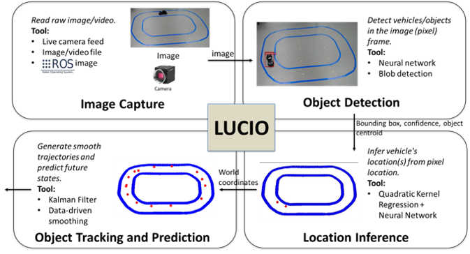
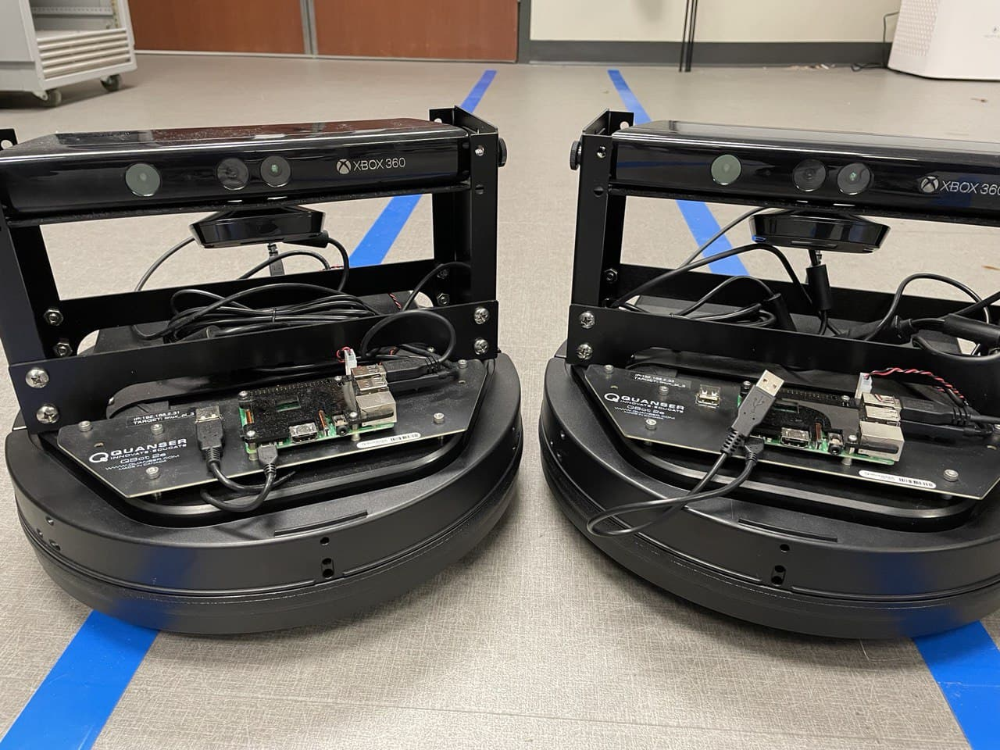

F1/10 Vehicle Control
A vison-based lane following controller framwork for 1/10-scale ground vehicle.

Formation Control of WMR
A formation control platform for differential-driven wheeled mobile robot (WMR).